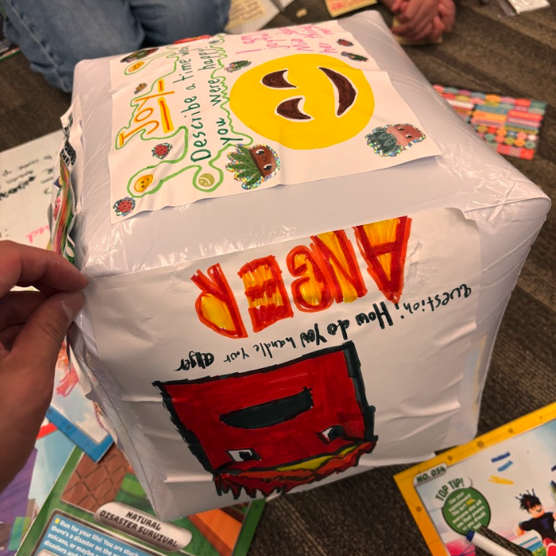
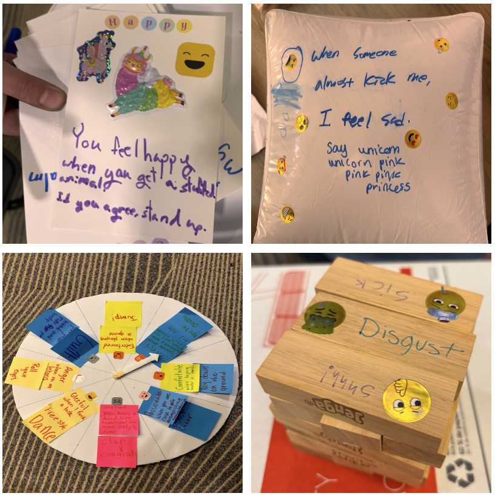

Goal: Watch how children already express, negotiate, and support emotions with each other.
We ran two co-design sessions.
PD1 · Storytelling Dice
We made oversized “emotion dice” (anger, fear, disgust, sadness, embarrassment). Kids rolled a feeling,
then told a real story from their life, acting it out and drawing it.
They loved “negative” emotions. One child said disgust was their favorite because it was “dramatic.”
This showed us that kids are comfortable exploring hard feelings when it’s playful and performative.
PD2 · Empathy Game (“You Are Not Alone”)
In small groups, kids designed empathy games. A player shared a stressful moment
(“I was nervous before presenting”), and others signaled if they felt the same.
Empathy sounded like “same, you’re not weird,” not “I’m sorry.”
Insight: Children kept creating tangible emotional tokens — drawings, cards, stickers.
They treated these like badges that say “this is how I felt.”
That behavior is what led us toward the concept of emotional stickers.

Fig 5. Kids openly shared fear, anger, and embarrassment while creating storytelling dice game.

Fig 6. Children naturally externalized emotions into collectible visual objects.